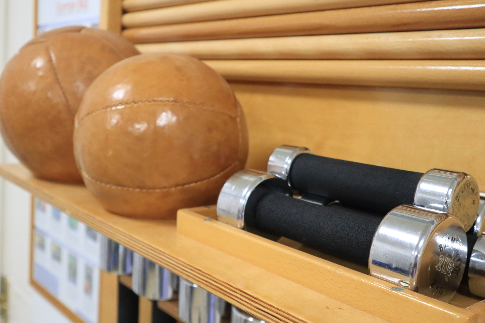
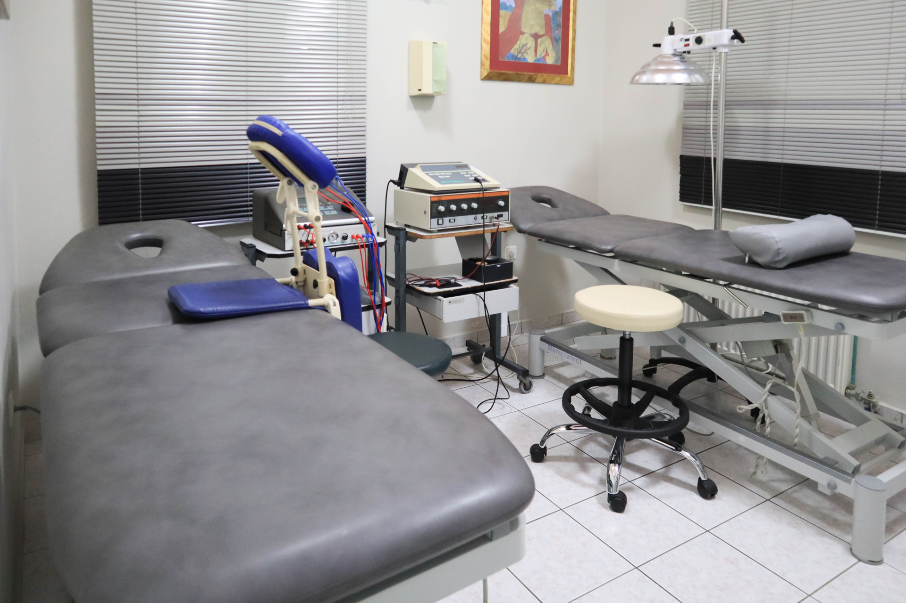

Personalized treatment plans for acute pain, chronic conditions, and postural dysfunction.
Physiotherapy & Clinical Pilates
Restore movement with calm, expert care.
IASIS in Argostoli, Kefalonia offers modern physiotherapy, manual therapy, and Clinical Pilates with a personal, evidence-informed approach for residents and visitors alike.

Since 1992
Long-standing clinical experience
1:1 care
Personal attention in every session
Mat & Reformer
Clinical Pilates for strength and control
Welcome to IASIS
A premium physiotherapy space designed around recovery.
The clinic combines modern physiotherapy equipment, hands-on treatment, and individualized exercise planning so each patient receives a clear path from pain relief to confident movement.
Structured rehabilitation focused on healing, tissue loading, and return to activity.
Focused therapy for function, balance, confidence, and day-to-day independence.
Core expertise
What we focus on every day
IASIS brings together manual therapy, movement analysis, therapeutic exercise, and Clinical Pilates to support both rehabilitation and long-term physical resilience.
Hands-on care to improve joint mobility, reduce pain, and restore comfortable movement patterns.
Mat and Reformer sessions that improve control, stability, posture, and injury prevention.
Gentle, progressive treatment tailored to long-standing musculoskeletal conditions.
Targeted treatment for overload injuries, recovery after training setbacks, and return-to-sport goals.
Clinical reasoning that respects medical history, symptoms, and functional goals.
Contemporary tools and modalities integrated only when they support the treatment plan.
Clinical Pilates
Strength, control, and safer movement for everyday life.
Clinical Pilates at IASIS is used as part of rehabilitation and prevention. Sessions are adapted to the person in front of us, with emphasis on breathing, alignment, stabilization, and movement quality.
- Ideal for recovery after pain episodes and recurrent overload
- Supports posture, trunk stability, and body awareness
- Suitable for both complete beginners and experienced movers

Why patients choose IASIS
Thoughtful care, clear communication, and a calm setting.
Every therapy plan is adapted to the needs, pace, and goals of the individual.
A clean, welcoming clinic atmosphere with carefully selected equipment and comfortable treatment spaces.
Treatment is designed to improve everyday movement, not only reduce symptoms in the moment.
The site and clinic presentation support both Greek-speaking patients and international visitors.
Inside the clinic
Real spaces, authentic care, and a refined therapeutic atmosphere.
Patient-style comments
Warm, reassuring, and focused on real improvement.
“The environment feels calm from the first moment and the treatment plan is always clearly explained.”Local patient
“Clinical Pilates helped me rebuild confidence in movement after recurring back pain.”Pilates patient
“As a visitor to Kefalonia, I appreciated the clear English communication and personal care.”International visitor